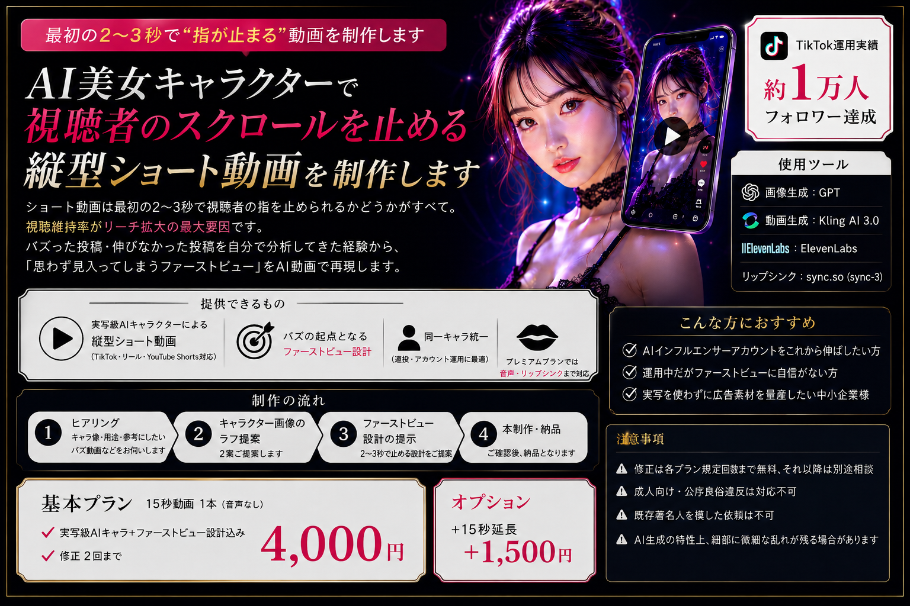
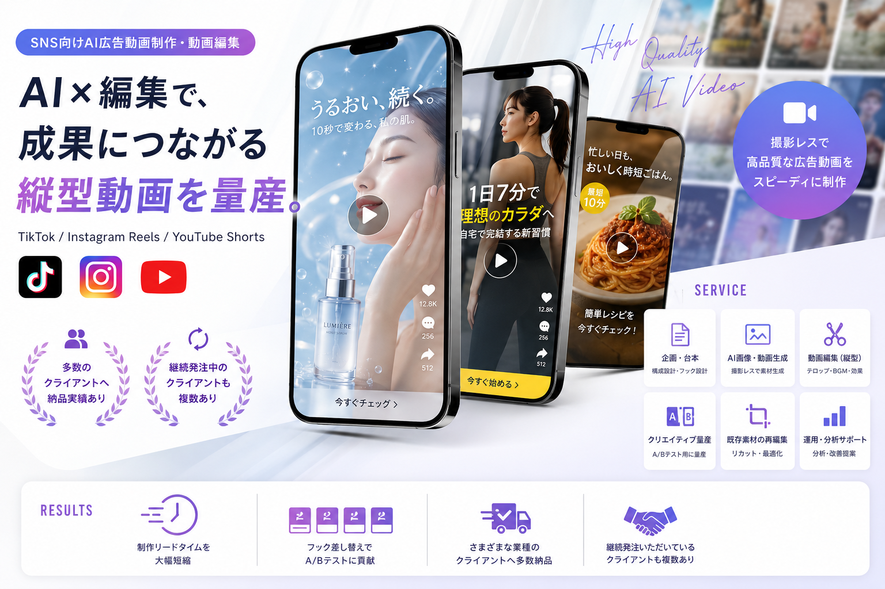

AIとノーコードで作った
制作実績
ホームページ・アプリ・業務システム・AI動画まで、これまでに手がけた制作実績の一覧です。

整備工場ホームページ制作
自動車整備工場向けのコーポレートサイト。サービス紹介・料金体系・来店予約フォームを実装し、スマホ最適化とSEOで地域集客を強化。

AI動画生成・AIインフルエンサー運用
AIで動画コンテンツを量産し、SNS上でAIインフルエンサーを運用。台本→TTS→動画合成までのパイプラインを構築し、複数アカウントでフォロワー1〜2万人を達成。

SNS向けAI広告動画制作・動画編集
SNS向けのAI広告動画の企画・生成・編集を一気通貫で提供。TikTok・Instagram Reels・YouTube Shorts向けの縦型動画を中心に、さまざまなクライアントから多数の納品実績があります。

片頭痛記録アプリ（自社プロダクト）
片頭痛の発症記録・服薬管理・トリガー分析を行うWebアプリ。日々の記録から発症パターンを可視化し、医師との共有レポートも生成。

自動車整備業向け会計管理システム
売上・経費の自動取込、レシートOCR、青色申告対応の会計ツール。LINE連携で領収書を撮影するだけで即仕訳。

福祉マッチングアプリ
介護・福祉サービス事業者と利用者をマッチング。Bubble.ioによるフルノーコード開発で、リリースまで4週間。

ECサイト構築
ShopifyベースのオンラインショップをCMS設計から構築。決済・在庫・配送通知を統合し、運用負荷を最小化。

社内RAGシステム
社内ドキュメントを学習したAIアシスタント。問い合わせ対応の自動化で、ナレッジ検索の工数を大幅削減。

補助金レコメンドシステム
企業情報を入力するだけで、該当する補助金・助成金を自動推薦。中小企業の申請ハードルを下げるAIシステム。

動画自動生成パイプライン
台本生成 → TTS → 画像生成 → 動画合成までを自動化。1テーマあたり数分で動画コンテンツを量産。

受発注管理システム
発注・在庫・出荷を一元管理する業務システム。Excel管理から完全移行し、月次工数を大幅削減。
同じような制作も承ります
業種・予算・納期に合わせて、最適な提案をいたします。